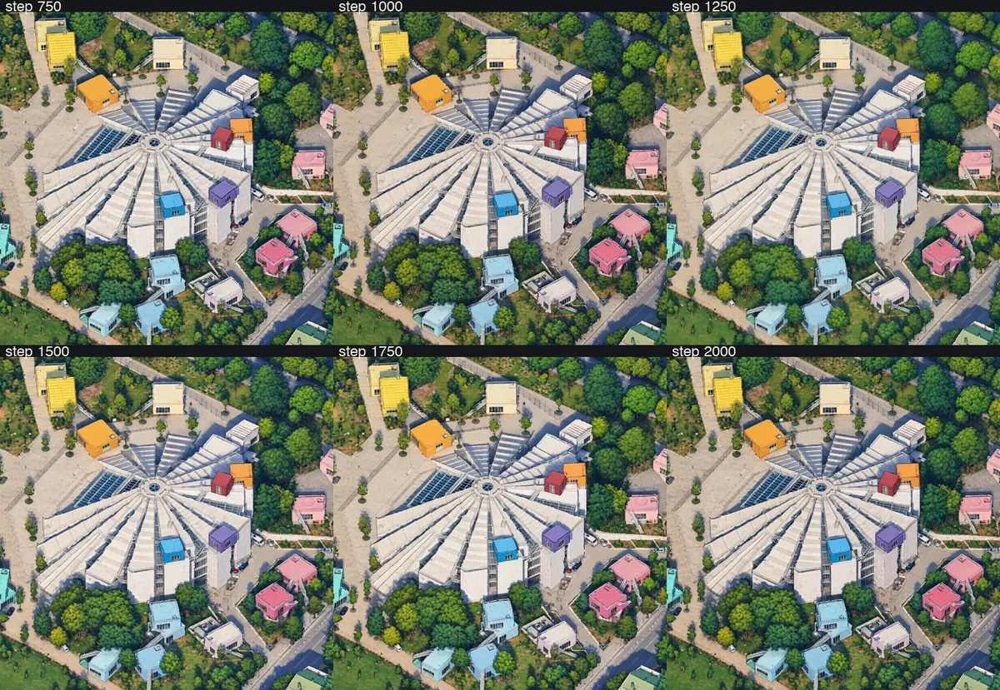
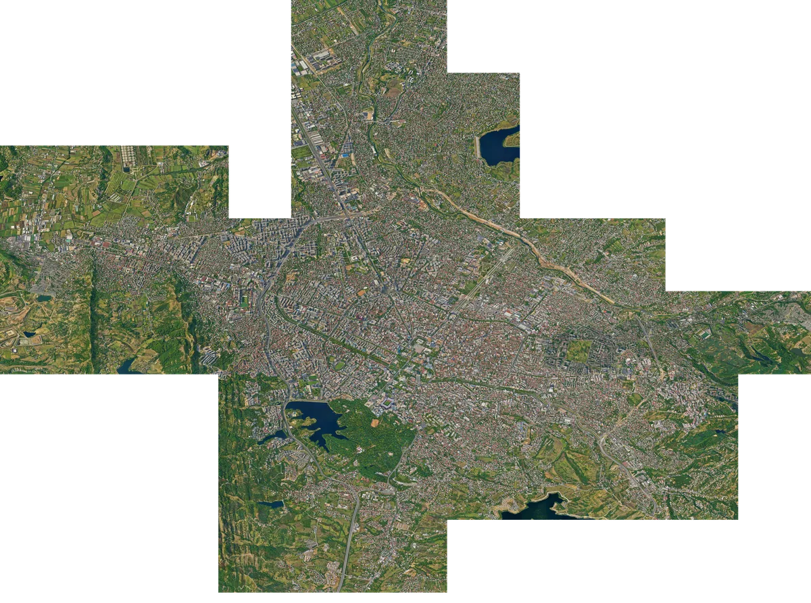
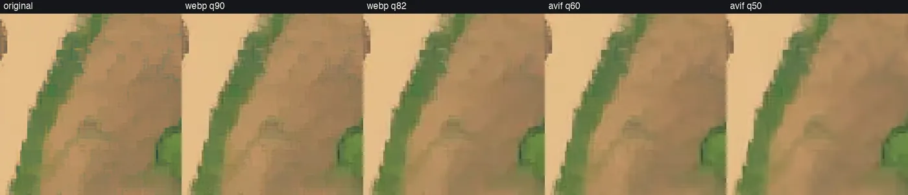
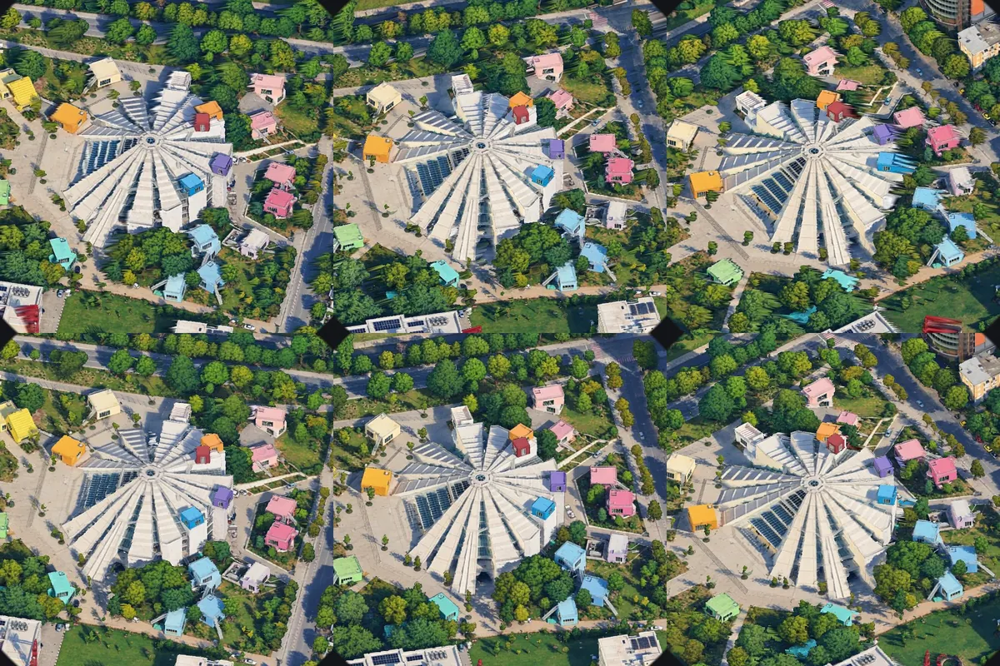

How Tiny Tirana was made
Contents
- Why, and who came before
- One camera for the whole city
- The first try (and what was wrong with it)
- Choosing a teacher: 9 models, 3 hard spots
- Making training data that can be trusted
- Training the painter
- Painting without seams (and in blocks)
- The viewer
- A living map
- Turning the city around
- The GPU: Google Colab
- What it cost
- What we learned
- Credits
- The shape of Tirana
- Dajti and the cable car
- Who made this, and more maps
- Fast on phones
- The landmarks
1. Why, and who came before
In January 2026 Andy Coenen published isometric.nyc, New York in the style of SimCity 2000, painted tile by tile by a fine-tuned image model. In October Boris Starkov did the same for all of London with tiny.london, and wrote up the method in detail. Within two weeks there were dozens of copies, collected on tiny.london/world: Istanbul, Berlin, Seoul, Warsaw, Toronto (three times), Prague (three times), Belgrade, and more.
Before starting we read every write-up we could find: 38 projects in the tiny.london directory and 28 more found on X, Hacker News and GitHub. The two that shaped this project most were tiny.london (joint sampling, teacher-and-student training, automatic checks) and Isometric Toronto (a complete recipe with costs, and the advice get the camera right first
). Nothing like this existed for Tirana. The only thing out there was a single AI image posted to r/albania in 2025, which commenters rightly called out for getting the city wrong. So this map tries hard to be faithful.
2. One camera for the whole city
The input is Google's Photorealistic 3D Tiles, the same mesh you see in Google Earth. We checked the alternatives. Albania's geospatial agency, ASIG, has laser height data, 8 cm aerial photos from 2015 and a 3D building layer, but none of it is published as a usable textured 3D model. OpenStreetMap has heights for only about 1 in 4 buildings in the centre. Google is the only source with textured building facades.
The camera is orthographic: no perspective, so a building has the same size anywhere on the map. It is tilted 45° down, looking north-west (heading 315°). One pixel is 0.146 m, so a 1,024 px frame covers 150 m. That is twice the detail of tiny.london (0.293 m/px). We tested whether more was possible: asking Google for finer detail returned identical pixels (100.0 %), so we already get the finest data that exists. Rendering at 2× zoom only revealed the mesh's triangles, not real detail.
The important trick, from tiny.london: the camera never moves. Each shot shifts the camera's view window by a whole number of pixels. Every shot comes from the same single camera, so shots line up to the pixel. To check this, we rendered the same area as one 2,048 px shot and as four 1,024 px shots, and compared them.
The renderer is a few hundred lines of three.js and 3d-tiles-renderer, driven headlessly by Puppeteer. On a laptop GPU (Apple M5, Metal) a 2,048 px shot takes 6–14 seconds. The first map area (Skanderbeg Square to Grand Park and the lake, about 10 km²) was 80 shots, rendered in 13.6 minutes, and the whole session used one root request to Google. The first version of this project had used one request per tile.
3. The first try (and what was wrong with it)
The project started earlier with another AI agent. It trained a first LoRA called s1000 on 320 Tirana pairs. Its painted, pixel-art look was liked straight away, but three things were wrong with it:
- Every tile had its own camera. Neighbouring tiles did not line up exactly, so they were blended at the edges, which left ghosted trees.
- The training images had been told to be flat. Their prompt literally said
every surface a single flat colour fill … a limited palette of about 24 colours
, and used a screenshot of isometric.nyc as the style reference. So the model learned that big plazas are flat beige. - Shadows became objects. Google's textures have the afternoon shadows baked in, and the model read a dark shadow band across Skanderbeg Square as a grey path.
The camera fix and the sampler fix (section 7) solved the first problem without any retraining. The other two needed better training data.
4. Choosing a teacher: 9 models, 3 hard spots
The method everyone converged on is: use an expensive model as the teacher and a cheap fine-tuned model as the painter. The teacher only has to draw about a hundred good examples. So we ran a small bake-off on fal.ai with three deliberately hard spots: Skanderbeg Square (paving and shadows), the Pyramid (complex geometry and the colourful boxes added in its 2023 renovation) and the lake shore (water). Every model got the same instruction, written as tiny.london recommends, how to draw, never what to draw
: draw exactly what the render shows, add and remove nothing, keep texture as fine pixel patterns, draw shadows as shading and never as objects.
| Model | Square | Pyramid | Lake | ≈ $ / image |
|---|---|---|---|---|
| GPT Image 2.5 "Sunburst" | paving kept, shadow as shading | faithful | natural water | 0.05 |
| GPT Image 2.6 | faithful | faithful | best water | 0.10 |
| Nano Banana 2.1 | invented market stalls | faithful | heavy outlines | 0.05 |
| FLUX.2 Max | invented patterns | geometry altered | pier moved | 0.15 |
| Nano Banana Pro | invented a shadow and people | invented an amphitheatre | comic style | 0.15 |
| Seedream 5 Pro | photo copy | photo copy | photo copy | 0.07 |
| Qwen Image 3 | pasted the style example in | photo copy | photo copy | 0.04 |
The winner was GPT Image 2.5 Sunburst. It was the most faithful, and it was the only one that drew the shadow band as shading. Its look was softer than FLUX.2 Max, so we gave it a FLUX.2 drawing as its style example. Each spot got an example from a different place, so there was nothing in it to paste. That kept Sunburst's fidelity and moved the look toward FLUX's crisper pixels.
5. Making training data that can be trusted
We picked 125 frames of 1,024 px:
- 20 hard spots inside the map: both halves of Skanderbeg Square, the Pyramid, the castle, the Lana in three places, the lake shores, both stadiums, Blloku, TID Tower, the old station boulevard.
- 45 random cells inside the map.
- 60 places outside the map, so the model also learns districts it hasn't seen: socialist-era blocks in Yzberisht and Kombinat, Laprakë, Sauk, the ring road, the Dajti foothills, Farka lake.
Four more frames were kept out completely, so later checkpoints could be judged on places the model never saw: Mother Teresa Square, Air Albania Stadium, a residential block, and a patch of Grand Park.
Every teacher drawing is checked automatically against its render before it is trusted, because vision-model judges were the weakest link
(tiny.london). We used three numbers, calibrated on the bake-off images whose verdicts we already knew:
| Check | What it catches | Example caught | Rule |
|---|---|---|---|
| Edge correlation, whole frame | invented or moved buildings | Nano Banana Pro's amphitheatre: 0.04 | ≥ 0.45 |
| Edge correlation, worst 64 px block | a local paste or invention | Qwen's pasted building: 0.00 | ≥ 0.25 |
| Edge correlation, upper bound | photo copies | Seedream: 0.87–0.89 | ≤ 0.85 |
A drawing that fails is redrawn, up to three times, and then the frame is dropped. Of 140 calls, 19 were rejected, and 4 frames were dropped. 121 pairs remained, for about $8.40. We checked every dropped frame by eye. They were all right to drop: in one, the teacher had quietly zoomed and re-framed the scene.
6. Training the painter
The painter is Qwen-Image 2.1 Turbo, an open 20-billion-parameter image model that needs only 8 sampling steps, plus a LoRA: a small add-on (rank 32, 159 MB) trained with ai-toolkit. The render goes in twice: as image tokens in the prompt and as clean latents in the sequence. It is the same "edit" setup the first model was trained with.
The LoRA started from the first model, s1000, which itself started from tiny.london's published LoRA. So it already knew the camera, the scale and Tirana's buildings, and the 121 new pairs only had to move the style. It ran for 2,000 steps at 3.2 s per step on a Colab G4 (an NVIDIA RTX PRO 6000, 96 GB), about 2 hours, with a checkpoint every 250 steps.
Later checkpoints are not automatically better. We measured three of them on 12 views, using the same edge check (fidelity) and a sharpness measure (crispness):
| Checkpoint | Fidelity | Crispness | Note |
|---|---|---|---|
| step 1,250 | 0.847 | 28.9 | softer; more faithful than step 2,000 on all 12 views |
| step 1,500 | 0.861 | 32.7 | the most faithful |
| step 2,000 | 0.827 | 33.4 | the crispest, but starting to drift from the geometry |

7. Painting without seams
The painter only ever sees one 1,024 × 1,024 px window at a time. The first map area alone was 20,480 × 16,384 px; the whole canvas is now 108,544 × 100,352. So how does a model that paints small squares produce one big picture with no visible joins?
The obvious way doesn't work. Cut the city into 1,024 px tiles, paint each one, and stitch them together, and you get seams: each tile is painted by a slightly different artist
, so a tree or a roof changes colour exactly where two tiles meet. The first version of this map was painted roughly that way.
What works is painting all the tiles at the same time. An image model doesn't paint in one stroke. It starts from random noise and cleans it up in a few steps (8 for this model). The trick, called joint sampling or MultiDiffusion and used by tiny.london, is to run those steps on the whole city at once:
- The whole map starts as one canvas of noise.
- At each step, the model looks at every overlapping 1,024 px window across the canvas, with each window's piece of the 3D render as its guide. Windows start every 768 px, so neighbours share a 256 px strip.
- Each window proposes how its pixels should change. Where windows overlap, the proposals are averaged, with more weight toward each window's centre (a "tent" that falls to zero at the edges).
- On the next step the whole window grid shifts by half a window, so window edges never sit in the same place twice in a row.
Every pixel is decided by several overlapping windows at every step, so neighbouring areas have to agree, and no seam can form. For the central map that is 1,157 window positions × 8 steps, about 9,000 model calls. On one GPU it takes 48 minutes.
for each of the 8 steps:
velocity = 0, weight = 0
for each 1,024 px window (768 px apart; odd steps use a grid shifted 384 px):
v = model(window of the latent, its render crop, step)
velocity += v × tent # tent: 0 at the window edge, flat in the middle 512 px
weight += tent
latent += (σ_next − σ) × velocity / weightBlocks, for the whole city
The whole city (about 75 km² across all 11 urban districts) is too big for one canvas in memory. So it is painted in blocks of 8,192 px that overlap their neighbours by 1,024 px. Blocks are done in four rounds, like the four colours of a checkerboard, so blocks in the same round never touch. Each new block keeps the strip its finished neighbours already painted fixed ("pinned") and grows out of it: at every step, the pinned pixels are reset to the finished painting, noised to match the current step. So blocks continue each other instead of being glued together. Every block is saved as soon as it is done, so a dropped GPU session loses at most one block.

The airport was the first test: 7 blocks, painted in about 70 minutes, with no visible joins across the runway or the terminal apron. For the whole city the blocks are split into three regions painted on three GPUs at once, with a line of seam blocks between them that is painted last, pinned to both sides. A small mistake that nearly cost hours: the blocks start every 7,168 px, which is 3.5 × the 2,048 px render grid, so every other column of blocks sits on render shots shifted by 1,024 px. The painter and the water clean-up both first assumed one grid and silently skipped half the shots.
The bigger lesson came at the end. In the overview the city looked seamless, but at full size many block edges were hard cuts: half a house on one side, a different house on the other, and a straight line through the Grand Park forest. With only 8 steps, the model decides the layout while the pinned strip is still mostly noise, so a new block can ignore its neighbour. Every block line was checked by measuring the jump in pixels across it and comparing that with lines where no block edge can be. The bad ones were repainted in narrow strips. Each strip starts from the painting itself, partly noised, keeps its edges fixed and lets only the middle be painted again, so the model keeps the layout and just mends the cut. After that the block lines can't be told apart from any other line in the picture. On calm lakes a faint tone difference survived, and it was smoothed out separately.
Water that stays water
Tirana Lake is shallow along its western shore, and in Google's 3D model you can see weeds and silt under the surface. The painter took those dark, blotchy shapes for land and drew a small forest in the lake. The fix comes before painting: OpenStreetMap's outline of each lake is projected onto the render at that lake's own water level. The level comes from free elevation data, calibrated so Tirana Lake matches. Inside the outline the render is calmed into almost flat water. Then only the water and a thin band of shore are repainted, with the rest of the painting held fixed. The same clean-up runs on every lake and pond of the wider city before it is painted, and it leaves OpenStreetMap's piers and jetties alone: the first lake fix painted the two piers on Tirana Lake into water, and they had to be put back.
A few places are blurred on purpose in Google's 3D model: sharp-edged polygons with a smear inside, the way some sensitive sites are hidden. The painter copied the smear faithfully. Those spots were found by looking for areas with almost no fine detail, apart from water. They were then filled with neutral painted ground: forest on the hillside, and grass and trees with a pale kerb in the city. The texture is borrowed from nearby parts of the painting, and nothing was invented about what is really there.
8. The viewer
The map page is plain HTML, CSS and a dozen small JavaScript modules, with no framework and no build step. OpenSeadragon shows a deep-zoom pyramid of 512 px tiles, served from Cloudflare R2. Pixels switch to nearest-neighbour above 100 % zoom, so the pixel art stays crisp.
- Tiles are AVIF, with WebP for browsers that can't show AVIF. The most-zoomed level keeps texture (AVIF q75, which matched WebP q90 at 35.7 vs 36.0 dB). Zoomed-out levels are compressed harder. The first map area was 84 MB as AVIF, against 134 MB as WebP q90.

- Search runs in your browser over 1,337 OpenStreetMap places, streets and landmarks. It is loaded only when you first click the search box (26 KB). It ignores diacritics and knows a few English words, so skanderbeg, pyramid and nene tereza all work.
- The address bar holds the view (
#lat,lon,zoom), so any link opens the same spot. The projection maths runs in the page too, accurate to a few centimetres in the centre. - Albanian and English, light and dark, phone layout, keyboard shortcuts (/ to search).
- A small Cloudflare Worker serves the page and three tiny APIs: the live planes, the anonymous statistics and the "here now" counter. Tiles carry a revision number, so a re-upload never shows stale tiles.
Live planes
Planes come from free ADS-B feeds (adsb.lol, with adsb.fi as a backup). A tiny server-side function asks once every five seconds for all visitors, so the feed is never hammered. On an isometric map, raising something only moves it straight up the screen. So a plane is drawn up at its height, with a dashed line down to its shadow on the exact ground spot. Real altitudes would put cruising jets far off the map, so the drawn height is squeezed: true near the ground, at most about 600 m. The label shows the real altitude. The planes themselves are a little toy airliner built in three.js and pre-drawn from the map's own camera at 32 headings, the way tiny.lisbon does its trams and planes.
9. A living map
The painting is a still image, so everything that moves on it is drawn live in the browser on top of it. The hard part is not the animation. It is making things sit exactly on the painted streets and disappear behind the painted buildings.
Heights from the 3D model
A point on this map is a latitude, a longitude and a height: with the camera tilted 45°, every metre of height moves a point about 5 px up the screen at full zoom. Free elevation data turned out to be a surface model in the city (it includes the buildings), reading 7–9 m too high everywhere, and the camera's own anchor height was 9 m above the real ground of Skanderbeg Square. Both put buses and markers visibly beside their streets.
The fix comes from the same Google 3D model the map was painted from. A second render, the height pass, stores the height of whatever surface the camera sees at every pixel instead of its colour. Streets are the lowest visible surface around them, so the street level at any point can be read straight off it. The first version of that reader iterated, and when a guess landed on a big roof it bounced between roof and street and sometimes stopped at nonsense (279 m), bending 45 of 48 bus routes. It now scans the possible heights for the one where the projected point really sits at street level. Behind a tall building, where the street is hidden, heights are filled in between the visible ends, so roads stay straight.
Hidden behind buildings and trees
The same height pass doubles as a depth test. Where a roof or a tree canopy is higher than the road at that pixel, the road is hidden from the camera. Buses and cars fade out there and continue as a faint "x-ray" silhouette, and a bus you follow keeps a coloured outline so you never lose it. Bus routes stay visible at half strength under trees and roofs.
What moves
- Buses follow the city's own published timetable (GTFS, Municipality of Tirana, CC BY-SA). Each bus is where the timetable says it is right now, with a lines menu, stops you can tap and next departures.
- Planes are live ADS-B positions (adsb.lol, adsb.fi), drawn at a squeezed altitude with a shadow on the ground. The airport is painted as its own island, and taking-off planes run along the painted runway.
- Cars are a calm trickle on main roads only: they follow the car ahead, yield at junctions and queue behind buses.
- Birds: the Muscovy ducks, coots, grebes and swans that actually live on Tirana Lake.
Buses, planes and cars are pre-drawn as small 3D toys from the map's exact camera at 32 headings, so they share the painting's angle. They all use one size rule (true metres, one shared minimum), so a bus is always about 2.7 cars long.
10. Turning the city around (an experiment, not on the site yet)
This is not live yet. The map you see is painted from one direction only, and the rotate button is switched off. What follows is the experiment so far.
None of the other AI-painted maps can rotate, because a painting has only one side. The idea: render and paint the map from four directions (NW, NE, SE, SW), and keep the height of every pixel from Google's mesh, so each painting can be lifted into 3D. Turning would then draw the two nearest paintings from the moving camera in WebGL and blend them per pixel by depth and angle, one filling the walls the other couldn't see.
We built this for a small test area and it works there: a 0.9-second orbit around the centre of the screen, exact at each of the four directions.

Before that we tried a flat 2D "turntable" warp, which rotated, sheared and zoomed the picture all at once. It made at least one person feel queasy, and the honest verdict was so bad I puked in my mouth a bit
. Real depth fixed it. Painting the whole city three more times is the missing step.
11. The GPU: Google Colab from the terminal
Everything heavy (training the painter, every checkpoint test and every full painting) ran on Google Colab, driven entirely from the command line with the Colab CLI. No notebook was ever opened in a browser.
| Item | Value |
|---|---|
| GPU | Colab "G4": NVIDIA RTX PRO 6000 Blackwell, 96 GB |
| Machine | 176 GB RAM, 236 GB disk |
| Price | ≈ 10 compute units / hour (≈ $1 / hour) |
| One 1,024 px painting | ≈ 5 s |
| Training (2,000 steps) | ≈ 2 h · ≈ 20 units |
| Central map (335 MP) | ≈ 48 min · ≈ 8 units |
| Early work (training, tests, first painting) | ≈ 60 units (≈ $6) |
The workflow:
colab new -s tirana --gpu G4 # rent the GPU
colab exec -s tirana -f setup_cell.py # install ai-toolkit, download the model (background, ~10 min)
upload_big.sh tirana main_canvas.png /content/ # 700 MB in 20 MB parts, sha256-checked
colab exec -s tirana -f launch_full.py # start the painting as a background process
colab exec -s tirana --env LOG=... -f peek.py # poll its log every few minutes
download_big.sh tirana /content/full/map.png . # parts again, checksum again
colab stop -s tirana # stop payingThings that only work if you know them:
- Long jobs run as background processes on the machine, never inside the
execcall. The connection to the notebook kernel freezes now and then, sometimes for 15 minutes or more, even with a timeout set. A job tied to that connection would die with it. So the job writes to a log file, and short polls read it. - Big files go in 20 MB parts with checksums. Single uploads over a few hundred MB fail with a server error.
- Two jobs can share the GPU, since 96 GB holds two paintings at once, but total speed barely changes and a third one ran out of memory. One GPU, one or two jobs.
- Several GPUs at once work: this account could hold three G4 sessions in parallel. For the whole city that turns roughly 6 hours into 2, because blocks in the same checkerboard round are independent.
- The machine's clock is UTC, the high-memory option is refused for the G4, and a session is billed while it exists, busy or not. So the last command of every run is
colab stop.
12. What it cost
| Item | Cost | Notes |
|---|---|---|
| Google 3D tiles | $0 | about 25 root requests in total, well inside the free tier (about 1,000 a month) |
| Teacher bake-off (fal.ai) | ≈ $3 | about 40 images, 9 models |
| Training data (fal.ai) | ≈ $8.40 | 140 Sunburst calls, 121 accepted pairs |
| Colab G4, early work | ≈ $6 | about 60 compute units: training, every checkpoint test, the full paintings |
| One full painting of this area | ≈ $0.80 | 8 compute units, 48 minutes |
| Landmark art (fal.ai) | ≈ $25 | dioramas, posters and icons for 46 landmarks |
| Growing the map | ≈ $15 | about 150 more Colab units: the corridor, Dajti, Farka and the edges, with seam healing |
| Hosting | $0 | static files on Cloudflare's free tier |
For comparison: painting the same map with the teacher directly would be about 1,160 calls (≈ $60) and still wouldn't be seamless.
13. What we learned
- Get the camera right before anything else. One camera, moved by whole pixels. Everything downstream depends on it.
- Seams are a sampling problem, not a model problem. Joint sampling removed them on the first try.
- The teacher's prompt becomes the map. "Flat fills" in a prompt a year ago became a flat Skanderbeg Square.
- A style example can be pasted in as content. Give multi-image models an example from somewhere else, or no image at all, and check for pasting.
- Check every training image against ground truth, with numbers. Calibrate the thresholds on images whose verdicts you already know.
- Later checkpoints are not automatically better. Measure fidelity and look at places the model never saw.
- Baked-in shadows are part of the input. Tell the teacher what they are.
- Make every stage resumable and every output checksummed. Large uploads failed, an export was cut in half, and GPU jobs ran out of memory. Nothing was lost because every stage could restart.
14. Credits
Method: tiny.london (Boris Starkov), isometric.nyc (Andy Coenen), Isometric Toronto (John Fewell), Isometric Istanbul (Yahya Bedirhan Pak), Tiny Prague (Martin Janoušek), Pixel Berlin, Isopolis, and everyone listed on tiny.london/world.
Data: 3D geometry and textures © 2026 Google (Photorealistic 3D Tiles). Place and street names © OpenStreetMap contributors (ODbL).
Models: Qwen-Image 2.1 Turbo (Alibaba, Qwen Research Licence, non-commercial). The LoRA started from tiny.london's published LoRA (non-commercial). Teacher drawings by GPT Image 2.5 via fal.ai; the style example was drawn by FLUX.2 Max.
Tools: three.js, 3d-tiles-renderer, Puppeteer, ai-toolkit (ostris), OpenSeadragon, Google Colab.
Privacy: the map keeps anonymous, cookieless statistics, so we can see which places and features people use. That covers visits and a few events: which landmark card was opened, which layer was switched, whether a search found something, how long a card stays open, and every 30 seconds the map centre rounded to about 1 km. It also counts how long the map is visible, how fast the first tiles load and the frame rate, script errors, the window width in 100 px steps, touch or mouse, and the browser language. The server keeps the country only, never the IP address. The "here now" counter counts open tabs by the same random per-tab number, and keeps only a running total of visits. To tell new visits from returning ones, your browser keeps the date of its last visit (in its own storage, never sent); a visit only reports "new", "today", "within a week" or "older". There is no cookie, no persistent ID and no search text. A random number groups one visit's events and disappears when the tab closes. If your browser sends Do Not Track or Global Privacy Control, nothing is sent at all. The live-plane positions come from public ADS-B feeds (adsb.lol, adsb.fi).
15. The shape of Tirana
The painting was made in square blocks, so its raw outline is a staircase of rectangles. The map you see is cut to an organic coast instead, with clouds around it, the way tiny.london does it.
- What counts as land: everything that was painted. An earlier version cut to Tirana's administrative boundary and threw away painted streets, which looked silly where the city simply carries on.
- The coast: a distance field that keeps the edge a little inside the painting, wobbled by layered noise, with wide rounded bays so the block staircase doesn't show. It is computed at 1/16 scale and smoothed up to full size, with a 3 px soft edge. Small cloud ponds inland and stray islets are removed, so it is one landmass.
- Growing it: the first shape was a thin corridor to the airport with the city hanging off it, and it looked odd. A second wave of 25 blocks, on two Colab GPUs overnight, filled in the north around the airport and rounded out the west and south. The seams along the new block edges were then healed in 34 soft strips (vertical first, then horizontal, so they never overlap), and two lakes whose halves were painted in different tones were repainted as one surface. The map now has about 20,500 painted 512 px tiles at full zoom, up from about 14,100.
- The clouds are a small tileable texture behind the map. They move with it, and only show where the painting is transparent.
16. Dajti and the cable car
Mount Dajti rises behind the city, and the Dajti Ekspres gondola climbs it. The mountain was painted in 14 extra blocks on two Colab GPUs at once (a third painted Farka Lake meanwhile), working one column apart so neighbours never paint at the same time; the middle column went last, pinned to both sides.
The cable itself is too thin for the 3D model, so the painting shows the stations but no line. The cable car on the map is drawn live instead: the real line from OpenStreetMap, 16 pylons on the terrain, a little sag between them, and red cabins about every 100 m moving at the real speed (the ride takes about 15 minutes).
17. Who made this, and more maps
Tiny Tirana was made by @okanerturan together with Claude, working in Claude Code. To be plain about it: Claude wrote almost all of the code, ran the renders, the training and the GPU paintings, checked the results and wrote the notes this page is built from. The human picked the city, the look and the landmarks, and said "no, again" when something was off, which was often. Claude's mistakes are in the story too: seams it had to heal, ducks that looked like fish, and one evening a map that was only clouds because it pointed the site at tiles that didn't exist yet. Each got fixed.
The code is on GitHub. The painting, the model and the Google-derived material stay non-commercial (see Credits).
More maps: our atlas of isometric cities puts every map we know on a globe, with how each was made. tiny.london keeps its own list at tiny.london/world, the atlas that started it. If you made one and it is missing, it should be in both.
18. Fast on phones
A friend opened the map on his phone and found it slow, so we measured: phone emulation (390 × 844 at 3× density), the CPU slowed 4–6×, a 4G connection, and a script of zooms and pans.
- Fewer pixels. A 3× screen asked for tiles at 3 device pixels per CSS pixel. Capped at 2×, the first view needs half the tile bytes (3.0 → 1.5 MB), and it is sharp in 3.9 s instead of 5.9 s on 4G.
- The right level first. Phones load the detail level they need straight away instead of climbing from blurry to sharp, and decode each tile before drawing it, off the main thread.
- No frosted glass on phones. Blurring the moving map under every panel, every frame, is the most expensive thing a phone GPU did here.
- Less work per frame. The cable car went from about 400 canvas calls a frame to three; hidden layers stop simulating; phones run half as many cars; the hidden minimap no longer runs a second viewer.
- Smooth, not jumpy. Zoom follows Isometric Istanbul's settings: gentle wheel steps, a short spring, and momentum when you flick the map.
With the CPU slowed 6×, the slowest frame during the zoom script went from 200 ms to about 50 ms, with no janky frames left.
19. The landmarks
Every landmark has a card with its story, a diorama and a poster drawn for this map, a photo where a freely licensed one exists, and its place on the painting. Each link below opens the map with that card, and it is also the link to share.
- Skanderbeg Monument (Monumenti i Skënderbeut): Monument · 1968
- Et'hem Bey Mosque (Xhamia e Et'hem Beut): Mosque · late 18th century
- Clock Tower (Kulla e Sahatit): Tower · 1822
- Palace of Culture (Pallati i Kulturës): Opera and library · 1960s
- Pyramid of Tirana (Piramida e Tiranës): Building · 1988, reopened 2023
- Tirana Castle (Kalaja e Tiranës): Fortress · Byzantine origins
- Great Mosque of Tirana (Xhamia e Madhe e Tiranës): Mosque · opened 2024
- Tanners' Bridge (Ura e Tabakëve): Ottoman bridge · 18th century
- Postbllok Memorial (Postblloku): Memorial · 2013
- Air Albania Stadium (Stadiumi Air Albania): Stadium · 2019
- National History Museum (Muzeu Historik Kombëtar): Museum · 1981
- Parliament of Albania (Kuvendi i Shqipërisë): Parliament
- Prime Minister's Office (Kryeministria): Government
- Palace of the Brigades (Pallati i Brigadave): Palace · 1930s
- Bunk'Art 2: Museum · 2016
- Resurrection Cathedral (Katedralja Ngjallja e Krishtit): Orthodox cathedral · 2012
- St Paul's Cathedral (Katedralja e Shën Palit): Catholic cathedral · 2002
- Mother Teresa Square (Sheshi Nënë Tereza): Square · 1930s
- Polytechnic University of Tirana (Universiteti Politeknik i Tiranës): University
- Archaeological Museum (Muzeu Arkeologjik): Museum
- National Gallery of Arts (Galeria Kombëtare e Arteve): Gallery
- House of Leaves (Shtëpia me Gjethe): Museum · 2017
- Blloku: Neighbourhood
- Sky Tower: Tower
- Rinia Park (Parku Rinia): Park
- Grand Park and Lake (Parku i Madh dhe Liqeni): Park · artificial lake
- Farka Lake (Liqeni i Farkës): Lake
- New Bazaar (Pazari i Ri): Market · renovated 2017
- Dajti Express (Dajti Ekspres): Cable car · 2005
- Tirana International Airport (Aeroporti Ndërkombëtar Nënë Tereza): Airport · Rinas
- Dajti Express Top Station (Stacioni i sipërm i Dajti Ekspres): Cable car station · 2005
- TEG, Tirana East Gate: Shopping centre · 2011
- Bunk'Art 1: Museum · 2014
- Downtown One: Skyscraper
- Palace of Congresses (Pallati i Kongreseve): Congress hall · 1986
- Botanical Garden (Kopshti Botanik): Garden · 1971
- Tirana Zoo (Kopshti Zoologjik): Zoo · reopened 2022
- Paskuqan Lake (Liqeni i Paskuqanit): Lake and park
- Dry Lake (Liqeni i Thatë): Lake
- Enver Hoxha's Villa (Vila e Enver Hoxhës): Villa · arts centre since 2025
- Sacred Heart Church (Kisha e Zemrës së Krishtit): Catholic church · 1939
- Tirana Mosaic (Mozaiku i Tiranës): Archaeological site · Roman era
- St Procopius Church (Kisha e Shën Prokopit): Orthodox church · 1945
- Tirana International Hotel (Hotel Tirana International): Hotel · 1979
- Olympic Park (Parku Olimpik): Sports complex · 2017
- Selman Stërmasi Stadium (Stadiumi Selman Stërmasi): Stadium · 1956